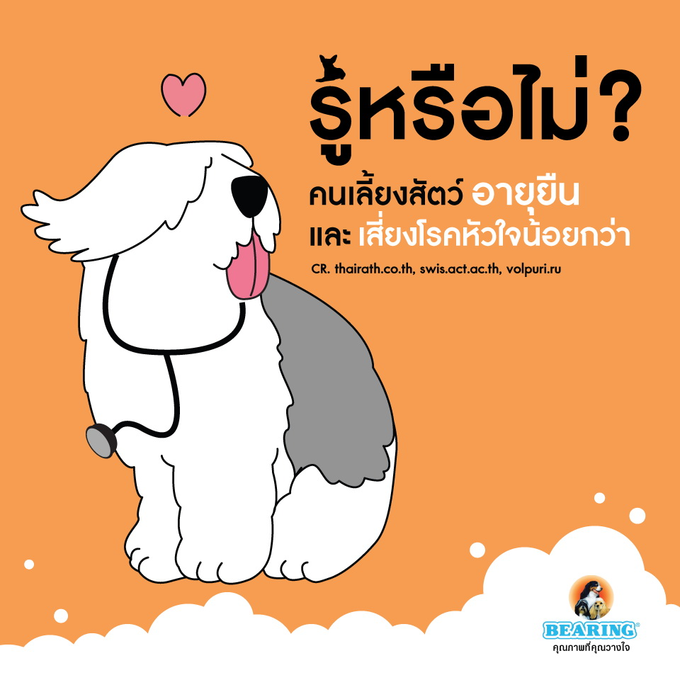
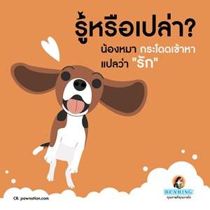
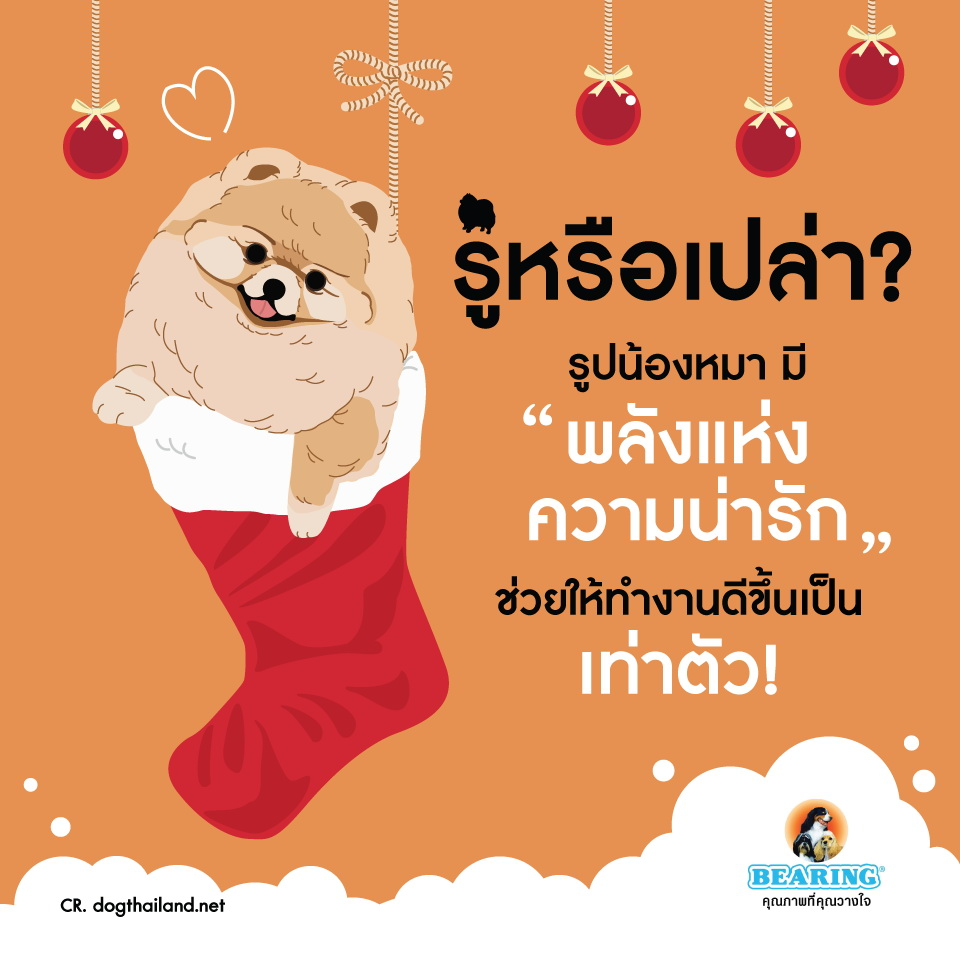
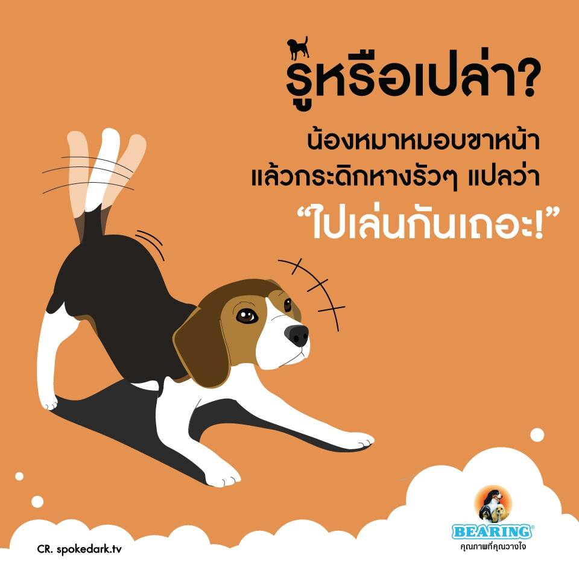

Pet Channel
|  | เลี้ยงสัตว์ อายุยืนกว่า! รู้หรือไม่? คนเลี้ยงสัตว์ จะอายุยืนกว่าคนที่ไม่เลี้ยง แถมยังเสี่ยงโรคหัวใจน้อยกว่าด้วย! ที่เป็นแบบนี้ ก็เพราะคนเลี้ยงสัตว์ จะมีภาวะเครียด เหงา ซึมเศร้าน้อยกว่าคนที่ไม่เลี้ยง แถมยังรู้สึกมีความสุขมากกว่า เรียกว่าสุขภาพดีกว่าทั้งร่างกายและจิตใจ จนทำให้อายุยืนยาวนั่นเอง |
|  | กระโดดเข้าหาแปลว่า รัก หลายๆ คนมักไม่ชอบอาการที่น้องหมากระโดดดีใจ และวิ่งเข้ามาหาเวลาเจอกัน จนถึงขั้นส่งไปฝึกพฤติกรรมไม่ให้ทำอีกเลยทีเดียว แต่รู้กันหรือเปล่าว่า อาการที่น้องหมากระโดดเข้าหามาเรานี่แหล่ะ เป็นการแสดงความรักที่มีทั้งหมดของหัวใจ แปลว่า เค้า "รัก" เรามากๆ นั่นเอง! |
|  | ความน่ารักของน้องหมาช่วยเพิ่มพลังเวลาทำงานได้! เชื่อว่าหลายๆคนคงเคยเผลอยิ้มออกมาโดยไม่รู้ตัวเวลาดูรูปน้องหมาน่ารักๆ ใช่มั้ยล่า? ที่เป็นแบบนี้ก็เพราะว่า รูปน้องหมาพวกนี้มี "พลังแห่งความน่ารัก“ ที่นักวิจัยชาวญี่ปุ่นได้ออกมายืนยันแล้วว่าพลังพวกนี้แหล่ะ ที่กระตุ้นให้การทำงานมีประสิทธิภาพมากขึ้น เพิ่มความถูกต้องแม่นยำ สร้างสมาธิ แถมทำให้เกิดความคล่องแคล่วกว่าปกติอีกด้วย รู้แบบนี้แล้ว เครียดเมื่อไหร่ อย่าลืมเปิดเพจ BEARING Petcare มาดูรูปน้องหมาน่ารักๆ กันนะคะ |
|  | หมอบขาหน้า แล้วกระดิกหางรัวๆ = ไปเล่นกันเถอะ! รู้หรือเปล่าคะว่า การที่น้องหมาหมอบส่วนหน้า พร้อมๆ กับเหยียดขาคู่หน้าลงพื้น แต่ขาหลังยังยืนอยู่ แล้วกระดิกหางรัวๆๆๆ แปลว่า มันกำลังชวนเราไปเล่น หรือถ้าพูดได้ มันคงร้องตะโกนออกมาแล้วล่ะว่า "ไปเล่นสนุกกันเถอะ" ลองไปสังเกตกันดูน๊าาาา น้องหมาของใครชวนเล่นบ่อยๆ ก็อย่าลืมตอบรับด้วยการพาไปวิ่งสนุกๆ หรือไปเดินเล่นชิลล์ๆ กันด้วยนะคะ น้องหมาจะได้มีความสุขค่ะ |